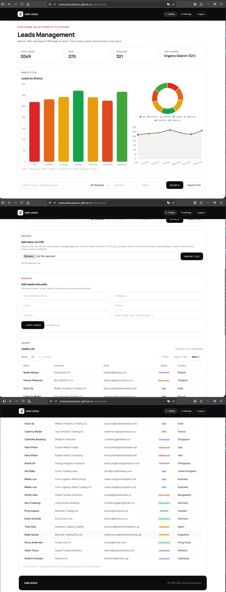
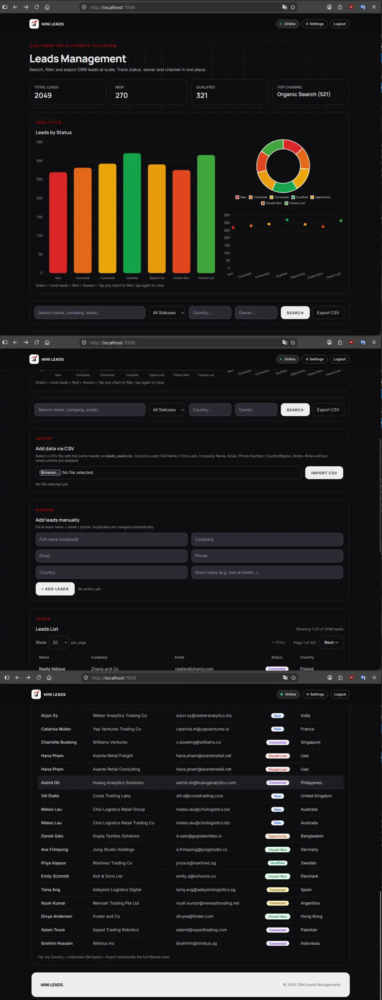
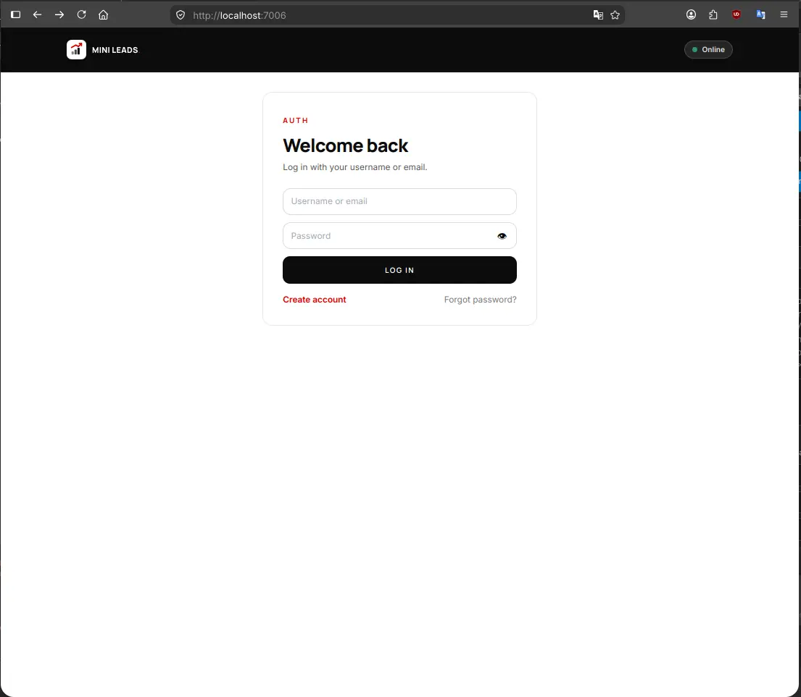
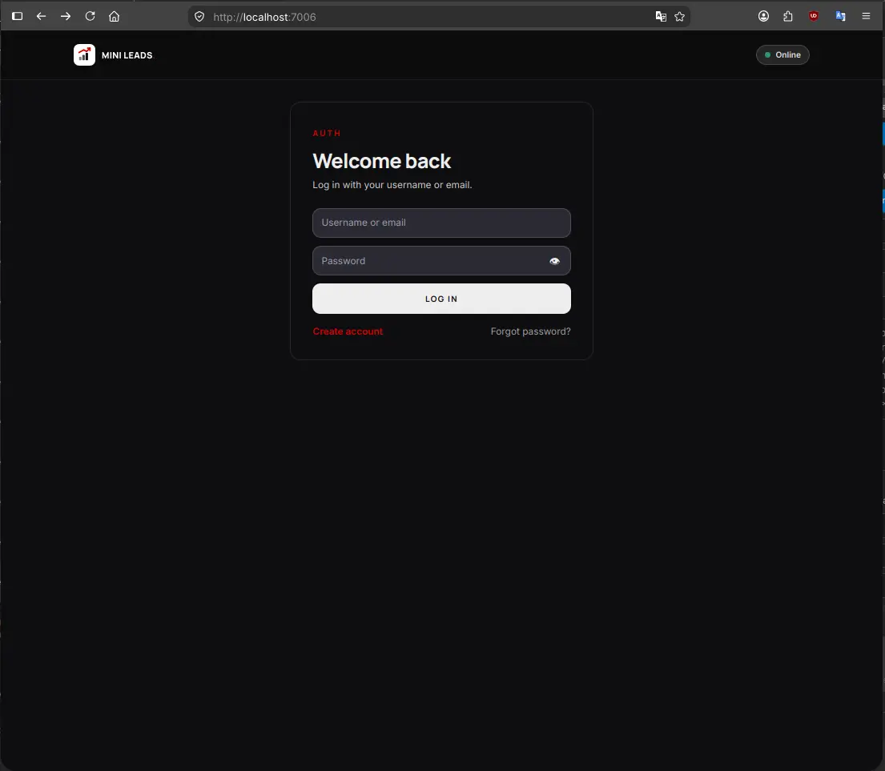
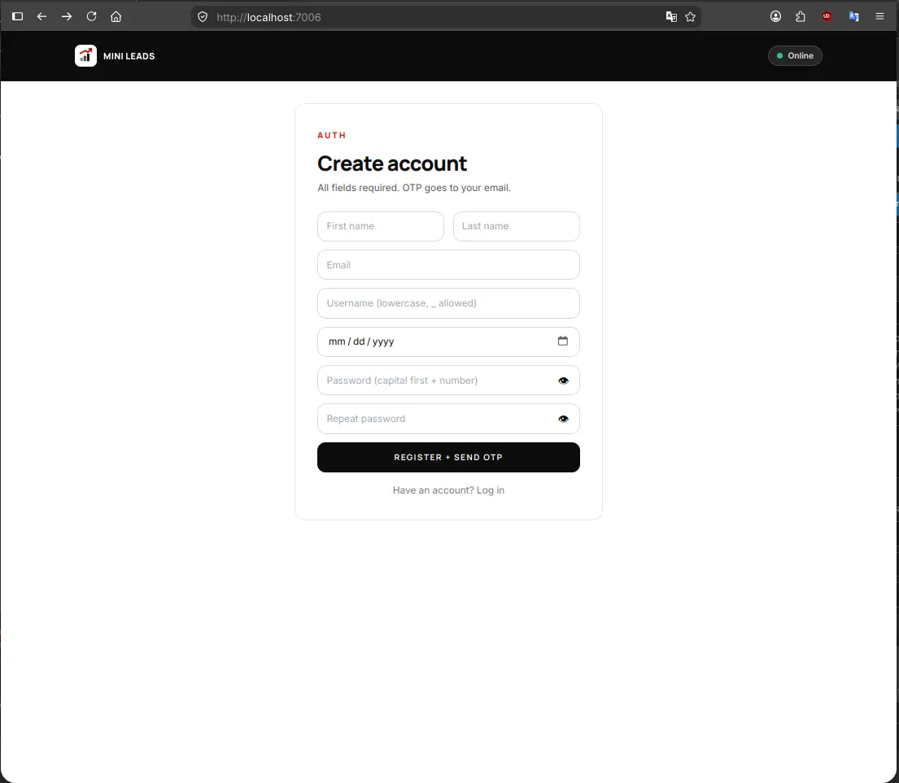
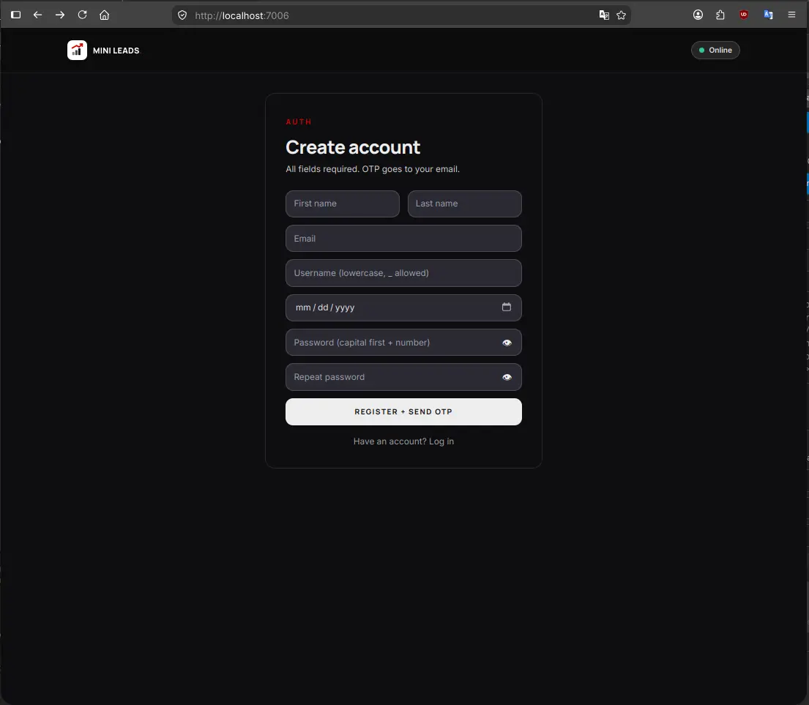
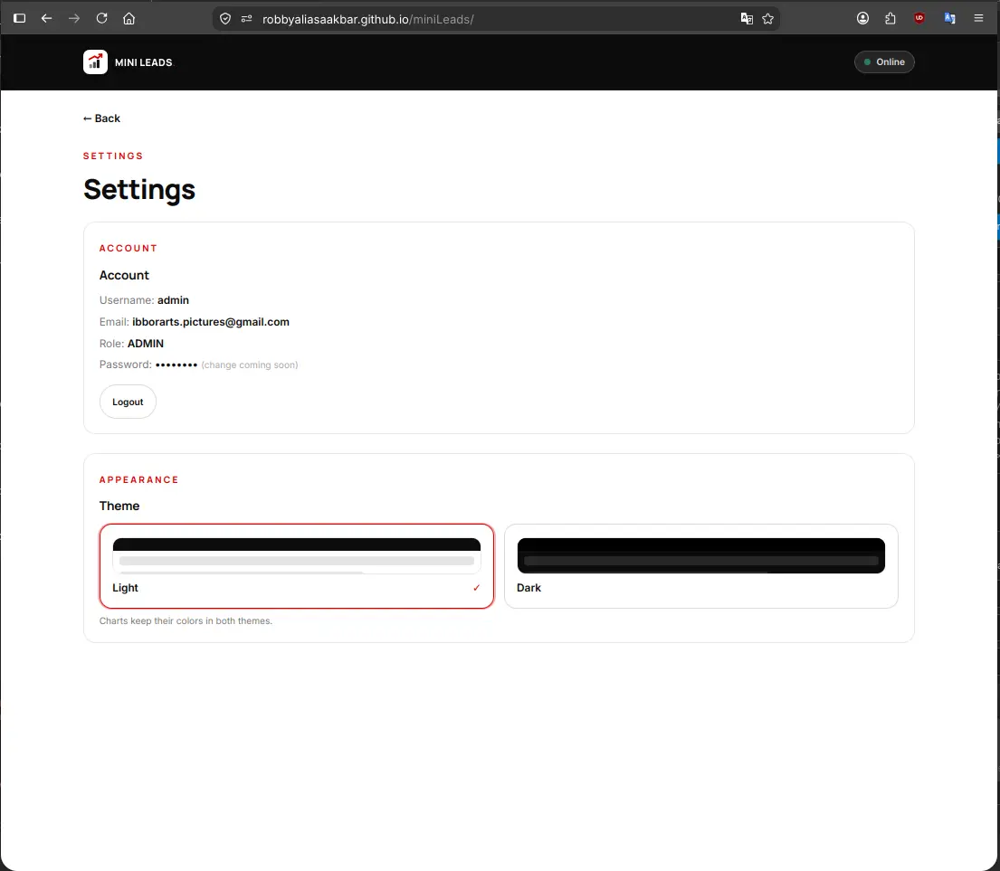
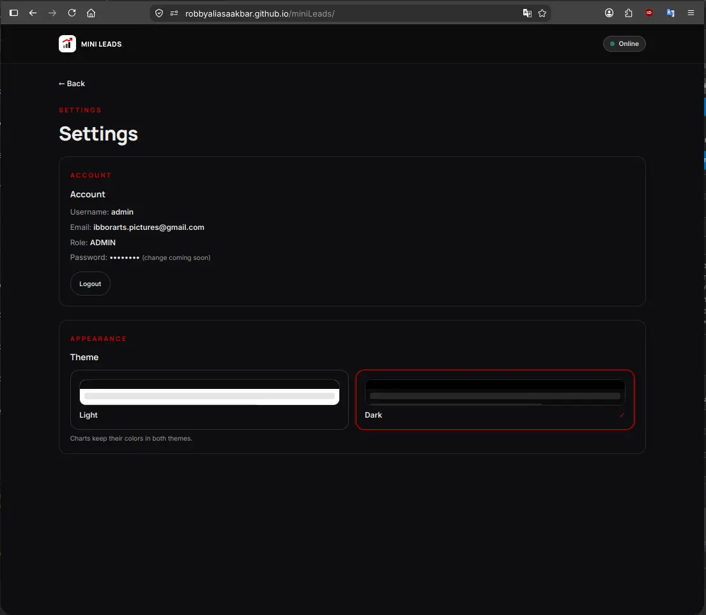

Experiment 012
Live React + Vite · Shared Auth · Two FunnelsMulti-User CRM With Server-Side Pagination, React + Vite, Live on GitHub Pages.
Can a second and heavier frontend, a React CRM handling 2049 rows with server-side pagination, interactive charts, CSV import and export, and dark mode, reuse the exact same auth backend from EXP 011 with zero new auth code, and ship live on GitHub Pages talking to a home PC over Tailscale Funnel?
Same Tiel-Coder-35B model · React 18 + Vite 6 · 2049 leads · 2 Funnel doors · Online daily 08.00–21.00 WIB (UTC+7)
Source Code
The CRM is public. Read it yourself.
You get the full frontend. React plus Vite, 43 modules, charts, CSV flow, dark mode. No secrets inside. The data API lives in its own repo with its own README.
github.com/robbyaliasaakbar/robbyaliasaakbar.github.io/tree/main/miniLeads
github.com/robbyaliasaakbar/mini-leads-service-api--backend
System Requirements
Live App
/miniLeads/ on GitHub Pages
Data API
Funnel :8443 to Docker :7005
Auth API
Funnel :443 to Docker :7002
Dataset
2049 replica leads in SQLite
Build Size
43 modules, ~367KB (~120KB gzip)
Local Dev
Vite dev server on :7006
Browser
Modern browsers, 375px to 1280px
Model Engine
Tiel-Coder-35B on llama.cpp
Built entirely with the same local model as EXP 010 and EXP 011. The frontend bundle is statically deployed to GitHub Pages. All customer data and authentication stay securely hosted on my personal computer through encrypted Tailscale Funnel connections.
Screenshots
Side by Side Visual Proof: Light and Dark Themes
Every view in miniLeads supports both daylight clarity and high-contrast dark mode. Charts keep their semantic colors across both themes so data stays readable without visual confusion.
1. Leads Dashboard and Real-Time Analytics
Light vs Dark

2. Authentication Login (Reusing EXP 011 Backend)
Light vs Dark

3. User Registration and Verification Flow
Light vs Dark

4. User Settings and Theme Configuration
Light vs Dark

Live Demo
Try the Real Application Online
The frontend is deployed live on GitHub Pages. You can test the interface, explore the layout, and switch themes right away in your browser.
Live frontend, home-PC backend. If the PC or funnel is off, login fails with a toast notification, which is expected and not broken. The screenshots above show the full operational flow.
For those of you unable to read this data from technical standpoint, here is the conclusion:
Every time a developer creates a new application, they usually rebuild the login system and user database from zero. Doing that over and over creates a huge mess and wastes valuable time. In my previous experiment, I created one clean login system. In this experiment, I wanted to prove that my first login system could act as a single master key for my next applications without copying any code.
This second project is a customer database containing 2049 business contacts, built with the help of my local AI assistant. It comes with full search, clickable charts that filter your lists, spreadsheet importing and exporting, and a clean dark theme.
The visual application is hosted publicly on the web so anyone can open it. However, the database engine and customer records stay safely inside my personal computer at home. They communicate across the internet through a secure private tunnel that features two separate doors: one door for logging in, and one door for customer records.
Because the database engine runs on my home computer, it is only active while my computer is turned on during the day. If my computer is off, the website still opens smoothly, but trying to log in will show a friendly alert that the server is currently sleeping. That is completely intentional and documented as part of running local software.
In practical terms, I only need to maintain one login service for all my projects. When I build a third or fourth application in the future, I can simply connect it to my existing master key. That keeps my system organized, saves time, and prevents duplicate work.
Experiment Details
Architectural Decisions and Engineering Tradeoffs
EXP 011 produced a single unified auth backend, and EXP 012 proves customer number two. miniLeads calls the exact same /api/login and /api/me endpoints on port 7002. It stores its token under a distinct key (crm.token) in the browser, yet the token verification logic remains completely identical.
The apiMe call works as an uncompromising gate. If there is no valid token, no customer data is ever fetched. We also enforced strict multi-user scoping: administrators can inspect every contact across the system, while regular users only retrieve rows matching their own verified email address. We applied an additive upgrade to the auth backend by adding nullable fields and dual-path login, tested eight out of eight scenarios in an isolated sandbox, and verified everything before shipping.
Production databases must tell the truth about their scale. Querying GET /leads returns a complete pagination payload containing total, page, limit, totalPages, count, and data. The server clamps page sizes strictly between 1 and 100 rows. If an incoming request asks for 500 items, the server enforces 100.
Whenever a user requests an out-of-range page number, the server automatically clamps to the final available page so the table never shows an empty phantom screen. Early development relied on a hardcoded limit of 200 rows while claiming the total count was just the array length. We resolved that immediately by executing a true SQL count query against the entire 2049 dataset. The user interface provides 20, 50, and 100 row selectors alongside dynamic page indicators.
In miniLeads, the charts are not passive decorative graphics. They serve as primary interactive filters for the entire lead table. A single centralized color grading function (chartTheme.js) powers all three visualizations: the lead status bar, the pipeline stage donut, and the acquisition channel line chart.
Tapping any segment on a chart instantly filters the table to display only matching contacts, and tapping the same segment again resets the filter. This behavior remains fully responsive across both mobile vertical views and desktop split screens. An essential lesson learned during local testing was that we must verify the actual code served to the browser. Stale development server caches misled us twice before we killed the process and opened clean browser tabs.
Both bulk CSV uploads and manual single-entry forms funnel through a unified backend ingestion door at POST /leads/ingest. The deduplication algorithm evaluates normalized phone digits with at least seven numbers as well as normalized email strings. If an existing record belongs to the same user, it updates the row instead of creating a duplicate entry.
Exporting CSV files is handled through an authorized fetch request. Standard HTML anchor tags cannot transmit Bearer tokens, so trying to trigger downloads through plain links failed authorization. We switched to an interactive button that attaches headers and handles the file blob. During automated testing, the built-in rate limiter blocked our own script with an HTTP 429 response. That proved the security perimeter was working properly, even against its creator.
We picked React 18 for miniLeads because the application state is genuinely complex. The interface orchestrates four simultaneous search inputs, server pagination, three synchronized Chart.js views, CSV ingestion flows, theme switches, and alternate mobile card views. A vanilla JavaScript approach would have quickly grown into unmaintainable boilerplate.
In contrast, this documentation article remains pure vanilla HTML and Tailwind CSS. Static long-form reading does not need JavaScript framework weight. We also committed to boring, proven CSS choices: explicit hex colors and standard dark variants. Fancy modern color notation failed silently in target browsers and caused blank buttons. Finally, we audited every label to remove draft words like demo and portfolio so the tool reads as real business software.
Evidence Log
Standalone Evidence Log: Terminal Receipts and Verification
Every technical claim in this article is backed by verifiable command line outputs. Private authentication tokens and personal identifiers have been replaced with dummy values, while raw status codes and payload structures remain intact.
E1. Two-Door Health Verification
200 OK / 401 ExpectedChecking data access on port 8443 and validating that the auth endpoint on port 443 safely rejects unauthenticated calls.
curl -s https://aispec.tail06293c.ts.net:8443/health
{"ok":true}
curl -s https://aispec.tail06293c.ts.net/api/me -H "Authorization: Bearer dummy"
{"error":"Token tidak sah atau kedaluwarsa"}
Result: The data funnel answers cleanly, and the auth door correctly validates tokens before releasing user information.
E2. Server-Side Pagination Truth
Exact 2049 RecordsThe API reports accurate counts and automatically clamps oversized limits and out-of-range page requests.
GET /leads?page=1&limit=20 -> total: 2049, page: 1, totalPages: 103, count: 20, data: [ ...first 20 rows... ] GET /leads?page=2&limit=20 -> total: 2049, page: 2, totalPages: 103, count: 20, first ID differs from page 1 GET /leads?page=1&limit=500 -> limit clamped to 100, count: 100 GET /leads?page=999&limit=20 -> page clamped to 103, count: 9 (final records, never empty)
Result: The database executes genuine count queries and protects against memory overflow from oversized client limits.
E3. Authentication Scope and Data Isolation
Multi-User EnforcedVerifying that customer records are isolated per user account while administrators retain broad visibility.
POST /api/login {"username":"admin","password":"[REDACTED]"}
-> 200 OK, token issued, role: "admin"
Isolation test:
User A inserts lead -> total for User A = 1
User B inspects leads -> total for User B = 0 (no data leakage)
User B attempts GET /leads/:id of User A -> 404 Not Found
User B attempts PUT /leads/:id of User A -> 404 Not Found
Admin inspects /leads -> returns all records across all users
Request without Authorization header -> 401 Unauthorized
Result: Per-user boundaries are strictly enforced on the server, not just hidden by client-side filters.
E4. Production Vite Build Receipt
43 Modules CompiledCompilation log showing public funnel URLs baked into the static bundle during build time.
vite v6.2.0 building for production... transforming (43) src/App.jsx ✓ 43 modules transformed. dist/index.html 2.10 kB │ gzip: 0.81 kB dist/assets/index-D3BUY3DC.js 367.42 kB │ gzip: 119.85 kB Grep verification in shipped bundle: grep "https://aispec.tail06293c.ts.net:8443" dist/assets/index-D3BUY3DC.js -> MATCH grep "https://aispec.tail06293c.ts.net" dist/assets/index-D3BUY3DC.js -> MATCH grep "localhost" dist/assets/index-D3BUY3DC.js -> 0 occurrences in api constants
Result: The compiled asset contains no local machine references, allowing visitors to connect over public tunnels.
E5. Test Suite and Data Hygiene Receipts
14/14 Tests PassedAll automated test cases passed and temporary rows were purged to preserve the exact count of 2049 records.
npm test (CRM data backend): 6/6 tests passed Isolated auth suite tests: 8/8 tests passed Database backup snapshot: leads.db.bak-20260914-1357 Orphan records check: 0 orphans detected Final dataset record count: SELECT COUNT(*) FROM leads -> 2049
Result: The entire test suite ran green, and test cleanup routines left the dataset in its original state.
Failure Log
All 26 Failures Documented Honestly
True engineering progress is defined by how bugs are diagnosed and resolved. Here are all 26 real issues encountered during development, divided into three major live session incidents and twenty-three focused takeaways.
1. The Localhost Shipped in Bundle Trap
Build Environment FailureSymptom: The application worked smoothly on the local development machine. However, as soon as it was published to GitHub Pages, remote visitors could not log in and received immediate network errors.
Diagnosis: Vite environment variables are baked in at compilation time, not evaluated at runtime. The build script was executed without loading production environment files, causing the bundle to ship with http://localhost:7005 as its target. When visitors opened the page, their browsers attempted to query localhost on their own devices.
Fix: We configured .env.production with explicit Tailscale Funnel URLs, rebuilt the application, and confirmed with grep that the compiled JavaScript contained the public domain names.
Lesson: Client-side JavaScript always executes on the visitor machine. Always inspect the generated bundle to verify which backend addresses are baked in.
2. Tailscale Funnel Exposed Only the Auth Door
Networking MisconfigurationSymptom: The login process worked over the public internet, but fetching customer leads failed immediately. It felt like the tunnel was dropping connections even though Tailscale reported healthy status.
Diagnosis: The public funnel was only routing port 443 to the auth service on port 7002. The CRM data server running on port 7005 was never assigned a public entry point. The tunnel was healthy, but half of our backend was locked inside.
Fix: We added an additive funnel rule binding HTTPS port 8443 to local port 7005 without disturbing the auth gateway on port 443. Both doors were verified using curl.
Lesson: Each independent microservice requires its own dedicated public port when tunneling to a home machine.
3. Build Script Overwrote Its Own Source Template
Deployment Pipeline LoopSymptom: After an initial build, the next compilation completed in a fraction of a second with a green status, but the application collapsed into an empty shell. The module counter dropped from 43 to just 4 modules.
Diagnosis: Our deploy step copied the output dist/index.html back into the root directory. On the following run, Vite treated the compiled output as its source entry point, compiling already compiled code and stripping out the source tree.
Fix: We established index.template.html as the single immutable source and treated the root index.html strictly as a build artifact. A rebuild restored all 43 modules.
Lesson: A sudden drop in compiled module counts signals an entry point corruption rather than a configuration error.
4. Stale Development Server
The server served stale assets twice despite clean disks. Always verify the code served over HTTP, not merely the files on your drive.
5. Hardcoded Port Flag Overrode Configuration
A command line flag kept the dev server on port 5173 despite configuration changes. Command line arguments always override configuration files.
6. Framework Ignored Non-Prefixed Variables
The frontend variable returned undefined because it lacked the VITE prefix. Always test environment bindings within the framework runtime.
7. Port Soup Confusion
Five arbitrary ports created development chaos. We consolidated them into a single centralized configuration where service numbers were clearly assigned.
8. Unilateral Directory Restructuring
Attempting to isolate files without prior agreement caused workflow friction. Architectural conventions must be agreed upon before moving folders.
9. Premature Execution on Clarifying Questions
I terminated a running server when asked a question instead of answering it. Questions require direct answers, and execution requires an explicit go.
10. Process Termination Matched Active Shell
A broad pkill command matched the terminal session itself and disconnected the terminal. Always anchor process patterns or target specific process identifiers.
11. Pagination Claimed False Totals
An early endpoint hardcoded a 200 row limit while presenting the array length as the full count. Production systems must execute true count queries.
12. Password Policy and Username Handling
The original auth backend rejected chosen test credentials. We inspected the auth source code first, then extended login support through additive methods.
13. Rate Limiter Blocked Automated Tests
Rapid test requests triggered the IP rate limit. That proved the security guard was active, but reminded us to respect request cooldown windows.
14. Identical Color Variable in Dark Footer
The background and text used the same variable, making elements invisible. Foreground and background styles must maintain guaranteed contrast.
15. Duplicate JSX Rendered Silently
A duplicate component slipped past the build without syntax errors. A successful build does not guarantee a visually correct interface.
16. Mobile Header Overflow on Narrow Screens
The navigation bar broke on 360px viewport widths. We introduced a mobile hamburger menu and ensured small screen testing happens first.
17. Prototype Copywriting Leaked to UI
Internal notes and demo labels were visible in the interface. We conducted a project-wide search to ensure customer-facing wording remains professional.
18. Benign Favicon Security Policy Warning
The API server logged a harmless warning for missing browser icons. We verified that not every console notification represents a functional defect.
19. Test Dataset Cleanliness
Temporary testing records threatened to pollute production analytics. We established strict cleanup routines that always restore the record count to 2049.
20. Tunnel Outage Expectations
Running on a home machine means the backend is offline when the PC sleeps. We documented this as a natural operating parameter rather than a bug.
21. Testing Against Stale Server Processes
A crashed backend left an older background process listening on the port. We added version probe checks to verify which instance handles incoming requests.
22. Shell Script Variable Expansion Error
Unquoted variables caused curl commands to misinterpret whitespace as separate arguments. Always print and review test variables independently.
23. Orphan Record Removal
An interrupted test suite left a single unowned row in the database. We built automated verification checks to ensure zero orphan entries remain.
24. White Screen on Missing Authorization
When auth became mandatory, the UI crashed on empty payloads. We attached tokens to all fetch calls and introduced defensive fallbacks for API errors.
25. Modern CSS Functions Rendered Blank
Experimental color notation caused buttons to render without styling in specific browsers. We rolled back to standard hex values and reliable Tailwind classes.
26. Overly Complex Explanations
Excessive technical jargon obscured practical user impacts. Clear communication should always present user impacts first before diving into internal mechanics.
Frontend Code
React State Management and Token Interceptor
The frontend coordinates multiple asynchronous flows through a streamlined API client. Below are the key patterns that keep requests secure and states in sync.
API Interceptor and Header Attachment — src/api.js (essence)
const API_URL = import.meta.env.VITE_API_URL || 'http://localhost:7005';
export async function request(path, options = {}) {
const token = localStorage.getItem('crm.token');
const headers = { 'Content-Type': 'application/json', ...options.headers };
if (token) {
headers['Authorization'] = `Bearer ${token}`;
}
const response = await fetch(`${API_URL}${path}`, { ...options, headers });
if (response.status === 401) {
localStorage.removeItem('crm.token');
window.location.reload();
}
return response.json();
}
Tap to Filter Chart Interaction Handler (essence)
const handleChartClick = (category, value) => {
setActiveFilters(prev => {
if (prev[category] === value) {
const next = { ...prev };
delete next[category];
return next;
}
return { ...prev, [category]: value };
});
setCurrentPage(1); // reset to page 1 on filter switch
};
Networking Architecture
Two-Funnel Infrastructure: Static Frontend to Local Backend
Connecting a static website hosted on GitHub Pages to a database on a home computer requires a clean network bridge. Tailscale Funnel makes this possible without opening hazardous router ports.
Door 1: Authentication Gateway
Public URL: https://aispec.tail06293c.ts.net
Internal Target: Docker container on port 7002 (PHP auth engine from EXP 011).
Handles user registration, Gmail OTP delivery, password hashing, and token generation across all applications.
Door 2: CRM Data Gateway
Public URL: https://aispec.tail06293c.ts.net:8443
Internal Target: Docker container on port 7005 (Node and Express CRM service).
Executes server-side pagination, CSV ingestion, record deduplication, and per-user contact isolation.
Both public endpoints terminate encrypted TLS connections at the machine perimeter. The static React bundle downloads into the visitor browser and communicates directly with both gateways without requiring any intermediary cloud servers.
FAQ
Frequently Asked Questions
Why React for this app but vanilla for the article page? ▼
The app juggles filters, pagination, three charts, CSV flows and theme in one state tree, so React earns its place. The article is static content, meaning vanilla HTML plus Tailwind is lighter and matches every other experiment page.
How can a static GitHub Page talk to your home PC? ▼
Two Tailscale Funnel doors handle the traffic. Port 443 proxies to auth on port 7002, and port 8443 proxies to CRM data on port 7005. The JavaScript bundle bakes in those public URLs at build time. When the PC is turned off, the doors are closed and the page explains that honestly.
Why does the API sometimes not answer? ▼
It is not running on a 24/7 cloud server yet. It lives on my personal home computer and stays online daily. Outside those operating hours any data request fails and the app shows a toast. Screenshots and curl logs remain as proof.
Live Status
Live Status — Live Frontend, Home-PC Backend
✅ What works now
- Live React application hosted on GitHub Pages
- 2049 replica customer records with server-side pagination
- Interactive tap-to-filter charts for real-time table queries
- Bulk CSV import and export with duplicate phone and email detection
- Complete daylight and high-contrast dark theme modes
- Shared authentication login reusing EXP 011 backend
- Two secure Tailscale Funnel gateways verified by terminal receipts
🚧 What isn't production yet
- Not running on a 24/7 high-availability cloud server
- Backend relies on personal computer remaining powered on
- Tailscale daemon and Docker containers require active host session
- Automated third-application tenant onboarding remains manual
- Production hardening and cloud deployment reserved for a future milestone
Frontend is live 24/7 on GitHub Pages. Backend runs on my personal PC and answers only while it is on (funnel :443 and :8443). Off-hours login and data requests fail with a toast, which is expected. Screenshots and curl logs show how it works.
Disclaimer
Disclaimer — Live Frontend, Local Backend, Not Production-Hardened
Validated with the exact same Tiel-Coder-35B model through llama.cpp-server (inference flags in EXP 001). All customer records use sanitized replica data, and company identifiers have been redacted per approval. Authentication secrets, session tokens, and passwords are never displayed.
First Customer: EXP 010 (Job Tracker) · Shared Backend: EXP 011 (:7002) · Second Customer: EXP 012 (/miniLeads/, :7005 and :7002) · Machine: EXP 001